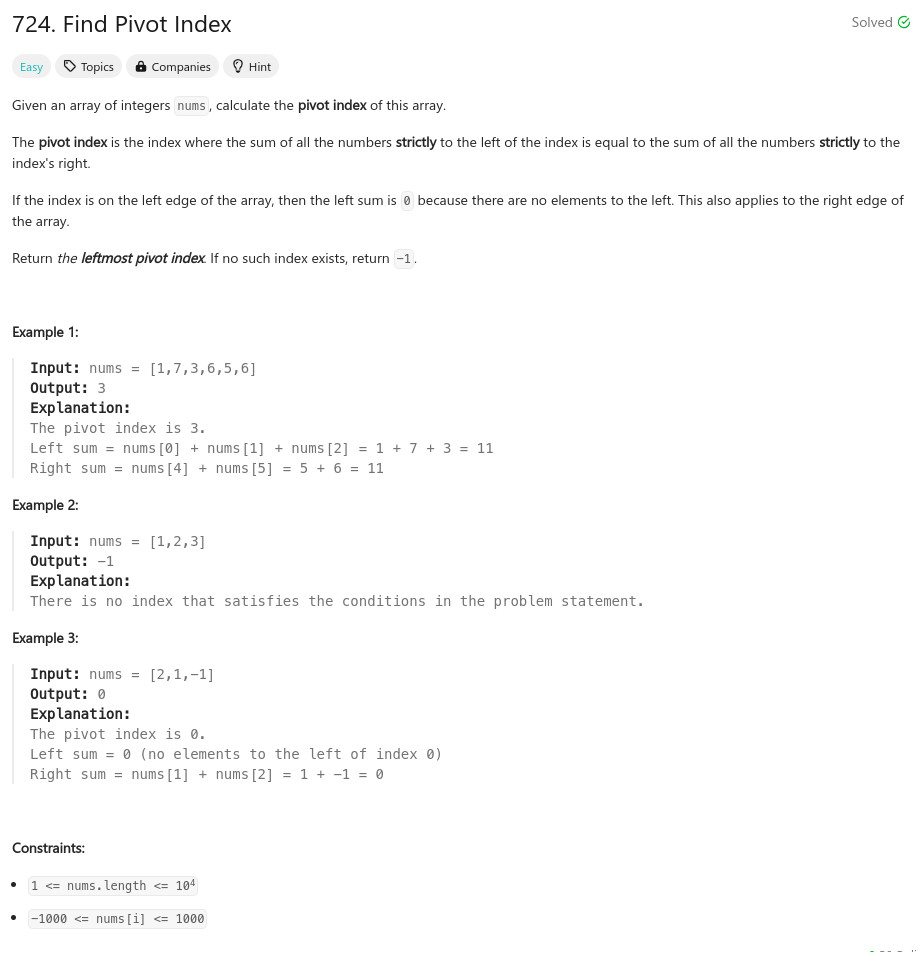

參考資訊：
https://www.cnblogs.com/cnoodle/p/13900751.html
題目：

class Solution {
public:
int pivotIndex(vector<int>& nums) {
int i = 0;
vector<int> l(nums.size() + 1, 0);
vector<int> r(nums.size() + 1, 0);
for (i = 1; i < nums.size() + 1; i++) {
l[i] = l[i - 1] + nums[i - 1];
}
for (i = nums.size() - 2; i >= 0; i--) {
r[i] = r[i + 1] + nums[i + 1];
}
for (i = 0; i < nums.size(); i++) {
if (l[i] == r[i]) {
return i;
}
}
return -1;
}
};